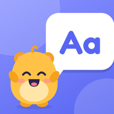
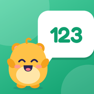
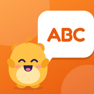

Letras Leer y escribir en cursiva: libro lecto-1, páginas 16–25.
Números Números hasta 10: contar, comparar, ordenar y sumar.
English Unit 1 «Time for school»: school things, sports, have got, our / their.
Letras Leer y escribir en cursiva: libro lecto-1, páginas 16–25.
Números Números hasta 10: contar, comparar, ordenar y sumar.
English Unit 1 «Time for school»: school things, sports, have got, our / their.Pictogramas: Sergio Palao · ARASAAC (arasaac.org) · CC BY-NC-SA · Gobierno de Aragón.